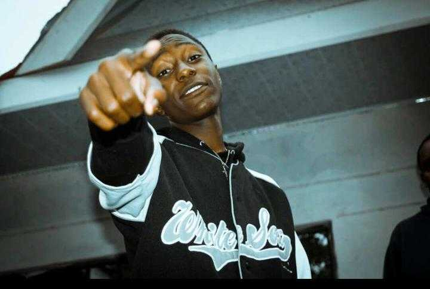

Iam Joseck osugo,born in the year 1999,apparently a second-year student undertaking a degree course at the Cooperative university of kenya and recently i decided to dive into coding of both websites and mobile applications because I wanted to chase my dream of becoming a coder not just in Kenya but also a well known coder who's work easily reveals his expertise in coding and after carrying out reserches about the institutions that offer the same course, I settled at Moringa School because of its good reputation and quality coders that school there
Attached below my picture

Apparently I have no job experience but meanwhile watch my Baby steps